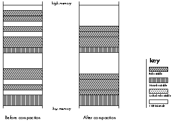
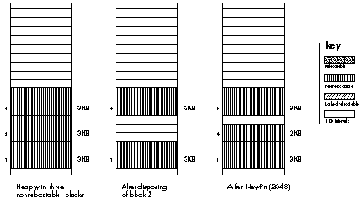
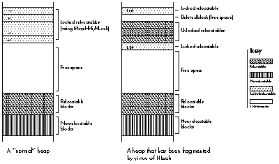
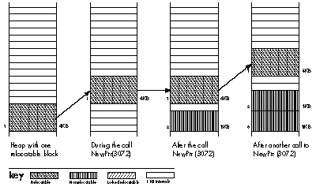

The Macintosh Memory Manager has changed in some subtle ways since it was
documented in Inside Macintosh . This, combined with the difficulty of observing what
the Memory Manager actually does, has led to a general misunderstanding of how the
Memory Manager works. This article first discusses some common myths about the
Memory Manager, then describes some ways to avoid memory-related errors and
control fragmentation without sacrificing execution speed.
Few parts of the Macintosh operating system raise as many questions as the Memory
Manager. Since the contents of RAM change dynamically, it's hard to really examine the
Memory Manager's behavior. This, combined with the unusual concept of relocatable
blocks and the fact that the Memory Manager is used by most of the operating system,
has left many Macintosh programmers confused about the behavior of the Memory
Manager and, more important, about the impact of this behavior on their applications.
Several myths have grown up around the Memory Manager, serving to increase the
confusion about its real behavior. Three of the most prevalent--but mistaken--
beliefs are that (1) the Memory Manager will move and delete blocks, and otherwise
mangle the heap, at random; (2) using nonrelocatable blocks will cause serious heap
fragmentation; and (3) if you use Virtual Memory you don't need to worry about the
Memory Manager. We'll demolish each of these myths in turn.
MYTH 1: THE MEMORY MANAGER WILL MOVE AND DELETE BLOCKS, AND
OTHERWISE MANGLE THE HEAP, AT RANDOM
This simply isn't so. The Memory Manager is in fact quite predictable. It only moves
blocks under these circumstances:
MYTH 2: USING NONRELOCATABLE BLOCKS WILL CAUSE SERIOUS
MEMORY FRAGMENTATION
This is a half-truth at best. The Memory Manager actually does a good job of allocating
nonrelocat- able blocks, but can fragment the heap when these blocks are deallocated
and new ones allocated. Similar problems can happen when you start locking
relocatable blocks.
This myth actually has a basis in reality, as the earliest versions of the Memory
Manager did a poor job of allocating nonrelocatable blocks. Before the 128K ROMs
(introduced with the Macintosh 512Ke and Macintosh Plus), the Memory Manager
would not move a relocatable block around a nonrelocatable block in its quest to
allocate a new nonrelocatable block. This made the heap into a patchwork of relocatable
and nonrelocatable blocks, and caused general fragmentation problems, as illustrated
in Figure 1.

Figure 1. Fragmentation of Free Space
But that has long since changed, as NewPtr will now move a relocatable block around a
nonrelocatable block when allocating memory. This tends to partition the heap into two
active areas, with all of the nonrelocatable blocks at the bottom of the heap, and the
relocatable blocks located immediately above. (See the sidebar "How the Memory
Manager Allocates Heap Space" for further details.)
On the other hand, for all of the improvements in allocation of nonrelocatable blocks,
there is still a problem withde allocation of these blocks. Since the Memory Manager
uses a "find the first free block that fulfills the request" strategy (as opposed to "find
a block that fits the request exactly"), if you allocate a subsequent block that is
smaller than the block you just deleted, the heap will become fragmented and the
amount of usable memory will likely decrease, as illustrated in Figure 3.

Figure 3. The Effect of Deallocating and Reallocating a Nonrelocatable
Block
Locking too many relocatable blocks can cause the same kind of fragmentation
problems as deallocating and reallocating nonrelocatable blocks. A well-trained
programmer uses the callMoveHHito move a relocatable block to the top of the heap
before locking it. This has the effect of partitioning the heap into four areas, as shown
in Figure 4. The idea of usingMoveHHi is to keep the contiguous free space as large as
possible. However,MoveHHi will only move a block upward until it meets either a
nonrelocatable block or a locked relocatable block. UnlikeNewPtr
(andResrvMem),MoveHHi will not move a relocatable block around one that is not
relocatable.
Even if you succeed in moving a relocatable block to the top of the heap, your problems
are far from over. Unlocking or deleting locked blocks can also cause fragmentation,
unless they are unlocked beginning with the lowest locked block. In the case illustrated
in Figure 4, unlocking and deleting blocks in the middle of the locked area has resulted
in heap fragmentation. The relocatable blocks thus trapped in the middle won't be
moved until the locked block below them is unlocked.

Figure 4. The Effect of Unlocking Locked Blocks
MYTH 3: IF YOU USE VIRTUAL MEMORY, YOU DON'T NEED TO WORRY
ABOUT THE MEMORY MANAGER
Many people believe that the wide availability of Virtual Memory will remove the need
for careful memory management. Wrong! The Virtual Memory system is based on a
series of "pages" of memory that can be swapped to and from the disk, rather than on
individual blocks of memory. If you fragment RAM, you also "fragment" the contents of
the swap file and gain nothing. In fact, Virtual Memory makes careful memory
management even more critical, for two reasons. First, fragmenting the swap file will
degrade system performance worse than fragmenting physical memory will, since disk
access speeds are obviously slower than the RAM access speed. Second, the combination
of Virtual Memory and MultiFinder encourages users to run more programs at the
same time than they used to, and users often reduce the partition sizes of their
applications to squeeze in "one more program."
Now you know that the Memory Manager moves blocks of memory only at certain
well-defined times; that nonrelocatable blocks can be allocated without causing serious
fragmentation in the heap, although deallocation and reallocation of these blocks, and
locking too many relocatable blocks, can cause problems; and that use of Virtual
Memory makes careful memory management even more important. It's time to put this
knowledge into action. In this section, you'll learn how you can work cooperatively
with the Memory Manager to increase the efficiency and robustness of your
applications.
TO AVOID DANGLING POINTERS
As every programmer learns early on, the gravest side effect of the Memory Manager's
penchant for moving blocks of memory is the peril of dangling pointers. (For a
refresher on how these come about, see the sidebar entitled "A Primer on Handles and
Their Pitfalls" in Curt Bianchi's article "Using Objects Safely in Object Pascal" in this
issue.) And the best defense against having to spend hours--or days--debugging
errors caused by dangling pointers is to anticipate situations in which block movement
might occur, and if it does occur, will throw a monkey wrench into the works. In these
situations, much grief can be saved by using a temporary local or global variable to
store a duplicate of the relocatable block. (Note, though, that this trick only works
properly if the block can stand on its own--that is, it's not part of a linked list.)
Some of the situations that might get you into trouble are well documented, such as the
use of the WITH statement in Pascal. Other dangerous situations are less obvious, so
we'll explore them here.
Be careful when evaluating expressions. There are times when evaluating a
seemingly innocent expression might have serious side effects. For example, look at
the following code:
TYPE
windowInfoHdl = ^windowInfoPtr;
windowInfoPtr = ^windowInfo;
windowInfo = RECORD
aControlHdl: ControlHandle;
aWindowPtr: WindowPtr;
END;
VAR
myHandle : windowInfoHdl;
BEGIN
myHandle := windowInfoHdl(NewHandle(sizeof(windowInfo)));
{ The next 2 statements have problems. }
myHandle^^.aWindowPtr := GetNewWindow(1000, NIL, WindowPtr(-1));
myHandle^^.aControlHdl :=
GetNewControl(1000, myHandle^^.aWindowPtr);
END;
In Pascal, the above statements would probably cause a run-time error. The problem
is in the expression " myHandle^^.something :=" as the compiler evaluates
expressions from left to right and calculates the address on the left side of the
assignment statement before making the toolbox call. When GetNewWindow is called,
myHandle^^ is moved (we passed in NII to force a call to NewPtr) and the address on
the left- hand side is no longer valid! This means that the returned WindowPtrwill be
written into the wrong area of memory, and the program will probably crash.
While both statements suffer from the same basic problem, the first one is more
likely to cause a crash than the second one and is therefore easier to debug. Why is
this?
The statement containing GetNewWindow will make a call to NewPtr to allocate a
nonrelocatable block at the bottom of the heap, forcing relocatable blocks upward in
the process. The other statement, containing GetNewControl, allocates a relocatable
block, which usually appears above the existing blocks, with block movement
happening only if a compaction is required.
While this problem occurs most frequently in Pascal, C programs are not immune.
Most C compilers on the Macintosh evaluate the right- hand side of an assignment
before the left-hand side--which avoids this problem entirely--but the order of
evaluation is not guaranteed by the ANSI standard.
This problem can be solved easily by using a temporary variable. The following code
avoids the problem:
VAR
myHandle: windowInfoHdl;
aWindowPtr: WindowPtr; { This is allocated on the }
{ stack, so it won't move. }
aControlHandle: ControlHandle; { Also on the stack. }
BEGIN
myHandle := windowInfoHdl(NewHandle(sizeof(windowInfo)));
{ Copy the result into a temporary variable, then copy }
{ that into the relocatable block. }
aWindowPtr := GetNewWindow(1000, NIL, WindowPtr(-1));
myHandle^^.aWindowPtr := aWindowPtr;
aControlHandle := GetNewControl(1000, aWindowPtr);
myHandle^^.aControlHdl := aControlHandle;
END;
Be careful when using callback routines. When you pass pointers to your
routines, say as a ROM callback routine, and your routines are in multiple segments,
you need to be careful.
The following code is fine now, but we'll soon edit it to demonstrate the problem:
{$S Main }
PROCEDURE MyCallback(ctl: ControlHandle; part: INTEGER);
{ This represents a callback routine used for continuous }
{ tracking in controls. }
BEGIN
{ Do whatever you need to do. }
END;
PROCEDURE HandleMyControl(theControl: ControlHandle;
pt: Point);
BEGIN
part := TrackControl(theControl, pt, @MyCallback);
END;
The expression @MyCallbackpushes the address of the callback routine onto the stack
before calling TrackControl. If the two routines are in the same segment, as in the
preceding example, all is fine. The segment is locked in memory when @MyCallback is
both evaluated and used; therefore, the address is valid. If the two routines are in
different segments, this also works, as the compiler takes the address of the jump
table entry for MyCallback.
In some cases, and especially in C, you may choose to set up a table of procedure
addresses. But if you store the address of the routine into a variable, strange things
may happen. Take a look at the following code:
{ ----------------------------- }
{ For an example, we'll place the addresses of two control }
{ tracking routines into an array, then use them. }
VAR
gCallbackArray: ARRAY [1..2] OF ProcPtr;
{ ----------------------------- }
{$S Segment1 }
PROCEDURE MyVScrollCallback(theControl: ControlHandle;
part: INTEGER);
BEGIN
{ This will get called if our control is a vertical }
{ scrollbar. }
END;
PROCEDURE MyVScrollCallback(theControl: ControlHandle;
part: INTEGER);
BEGIN
{ This will get called if our control is a horizontal }
{ scrollbar. }
END;
PROCEDURE InitCallbackArray;
{ Fill in the addresses in the global “Callback” array. }
BEGIN
{ Problem: Since we're in the same segment, these aren't }
{ addresses of the jump table entries, but are absolute }
{ locations in RAM! If the segment moves (i.e., if }
{ UnloadSeg is called), the addresses will be invalid. }
gCallbackArray[1] := @MyVScrollCallback;
gCallbackArray[2] := @MyHScrollCallback;
END;
END.
{ ----------------------------- }
{$S Main }
PROCEDURE HandleAScrollbar(theControl: ControlHandle;
pt: Point);
{ We'll call this if the user clicks in our scrollbar (except }
{ if she clicks in the thumb, which uses a different kind of }
{ callback.) If it's a vertical scrollbar, use one callback; }
{ if horizontal, use the other. }
VAR
part: INTEGER;
theCallback: ProcPtr;
isVertical: Boolean;
aRect: Rect;
cntlWidth: INTEGER;
BEGIN
aRect := theControl^^.cntrlRect;
cntlWidth := aRect.right - aRect.left;
isVertical := cntlWidth = 16;
IF isVertical THEN
part := TrackControl(theControl, pt, gCallbackArray[1])
ELSE
part := TrackControl(theControl, pt, gCallbackArray[2])
{ The TrackControl calls will probably crash if }
{ Segment1 has been unloaded since the table was built. }
{ You'll have a wonderful time trying to find the bug! }
END;
When setting up a table of such procedure addresses, or even a single global variable,
you should do one of the following things: (1) make sure that the setup procedure is in
a different segment from the procedures being called, thus insuring that you get the
address of a jump table entry; (2) keep everything in one segment and never unload
it; or (3) always load the segment and build the table before using any of the addresses
(and make sure that the segment doesn't get unloaded in the meantime).
Be careful when passing parameters. Another problem area occurs when you
pass parameters to routines that allocate or move memory. Can you spot the problem
in the following code?
PROCEDURE ValidateControl(theControl: ControlHandle);
BEGIN
ValidRect(theControl^^.contrlRect);
END;
ValidRect receives the address of a rectangle, which is pushed onto the stack before
the trap is called. The problem is that beforeValidRect uses the rectangle's address,
it often allocates memory of its own, which can cause theControl^^ to move and
therefore invalidate the rectangle's address.
This problem happens when you pass (1) any parameter larger than four bytes, or
(2) any VAR parameter. Again, the solution requires a temporary variable:
PROCEDURE ValidateControl(theControl: ControlHandle);
VAR
r : Rect; { r is stack-based, so it doesn't move. }
BEGIN
r := theControl^^.contrlRect;
ValidRect(r);
END;
Pascal compilers often avoid this problem for user-defined functions by making a
local copy of non-VAR parameters that are passed by address. The ROM doesn't make
such a copy, so you need to be careful. This is discussed at length by Scott Knaster in
How to Write Macintosh Software , 2nd ed. (Hayden Books, 1988).
TO CONTROL HEAP FRAGMENTATION
As you will recall, heap fragmentation can be caused by (1) deallocating and
reallocating nonrelocatable blocks, and (2) locking too many relocatable blocks. To
keep heap fragmentation under control, follow a few simple rules.
Use nonrelocatable blocks sparingly. To avoid the potential problems that
deallocation and reallocation of nonrelocatable blocks can cause, you should
theoretically use relocatable blocks for everything. However, in practice, there are
areas where you must use nonrelocatable blocks, such as forGrafPorts and
WindowRecords. In light of this reality, here are three suggestions to help you control
fragmentation.
First, remember that you should not choose to use nonrelocatable blocks lightly. Use
them only when the Macintosh operating system requires them, or when you can
demonstrate a severe performance penalty for using relocatable blocks.
Second, avoid allocating nonrelocatable blocks unless they will never be deleted. If you
know about such blocks ahead of time, then you can allocate them at program start-up.
This works well if you'll have a single large "image buffer" or the like, or a limit on
the number of available windows. In these cases, allocating your large fixed blocks at
start-up time will avoid potential fragmentation problems.
Third, if you must allocate and deallocate nonrelocatable blocks on demand, you can add
some additional memory management code of your own. When you want to deallocate a
block of RAM, you can add it to a linked list of free blocks (that you maintain), and
then check this list for a free block of the exact size you need each time you want to
allocate a new block. Of course, this works best if the range of block sizes you support
is limited, and you still have to decide what to do if the block you want doesn't fit any of
the free blocks exactly. If you have to allocate a large number of nonrelocatable blocks,
or have other special needs, you should consider allocating a large block of memory and
doing your own memory management within that. Donald Knuth's bookThe Art of
Computer Programming, volume 2, 2nd ed. (Addison-Wesley, 1973) contains a
useful overview of memory management techniques under the heading "Dynamic
Storage Allocation" (pp. 435-55 and 460-61).
Note that this strategy of reusing nonrelocatable blocks works best under the 128K
ROM (and later) Memory Manager, since that version does the best job of allocating
nonrelocatable blocks. If you plan to write software under the 64K ROMs (Macintosh
128K or 512K), you should consult Scott Knaster's How to Write Macintosh Software
, which describes a strategy that does a better job with the old Memory Manager than
this strategy does.
Lock selectively and consider alternatives. Fear of dangling pointers often
drives new programmers to lock down everything in sight, quickly fragmenting the
heap and impeding the application's performance. More experienced programmers try
to avoid locking relocatable blocks, preferring instead to predict when the Memory
Manager will move blocks of memory and then only locking a relocatable block if they
must. If done infrequently, locking has a negligible impact on your application.
If you must lock a relocatable block, you should unlock it as soon as possible. This will
lessen the probability of another block being moved in underneath (by MoveHHi) and
locked. Also, if you move and lock several blocks together, you should unlock all of
them together, or at least in the reverse of the order in which they were moved high.
This will help ensure that the free area is kept together in the heap.
As an alternative to locking relocatable blocks, consider using temporary variables.
We've already seen the use of temporary variables for such small items as window
pointers and rectangles, but this approach can also be used for entire structures.
Using temporary variables can simplify your code by removing the need for HLock
and HUnlock calls. For example, many programs use a window's reference constant
(RefCon) field to hold a handle to a data structure. Programs that do so look something
like this:
TYPE
windowInfoHdl = ^windowInfoPtr;
windowInfoPtr = ^windowInfo;
windowInfo = RECORD
rectArray: ARRAY [1..10] OF Rect;
END;
PROCEDURE UpdateWindow(wp: WindowPtr);
{ The window's RefCon contains a handle to the data structure shown }
{ above. The rectArray field contains an array of rectangles that }
{ we want to draw. }
VAR
myHandle: windowInfoHdl;
count: INTEGER;
BEGIN
{ Get the window information, then lock the block so that it }
{ doesn't move while drawing the rectangles. }
myHandle := windowInfoHdl(GetWRefCon(wp));
MoveHHi(Handle(myHandle));
HLock(Handle(myHandle));
BeginUpdate(wp);
FOR count := 1 TO 10 DO
{ Working with the heap-based window information, draw each }
{ rectangle. }
FrameRect(myHandle^^.rectArray[count]);
EndUpdate(wp);
HUnlock(Handle(myHandle));
END;
Notice that we had to perform several type casts, and use MoveHHi,HLock, and
HUnlock. Now, let's see how this would look using a temporary variable:
{ Type declarations omitted for brevity. }
PROCEDURE GetWindowInfo (wp: WindowPtr; VAR info: windowInfo);
{ Utility routine to make a copy (usually stack-based) of our }
{ window information structure. }
VAR
myHandle: windowInfoHdl;
BEGIN
{ First, do a little error checking. }
IF (wp NIL) THEN BEGIN
myHandle := windowInfoHdl(GetWRefCon(wp));
{ You can incorporate extra error checking here. For example, }
{ this is a good place to compare the handle’s size to the }
{ window information structure’s size, or to verify that the }
{ contents of the block are legal values. }
{ }
{ Next, go ahead and copy the contents of the relocatable }
{ block to the specified location. We don’t have to lock }
{ things down, since BlockMove won’t cause compaction. }
BlockMove(Ptr(myHandle^), @info, sizeof(windowInfo));
END;
END;
PROCEDURE UpdateWindow(wp: WindowPtr);
VAR
info: windowInfo; { This storage is on the stack, therefore it }
{ won’t move. }
BEGIN
GetWindowInfo(wp, info); { Get a copy of the window information. }
BeginUpdate(wp);
FOR count := 1 TO 10 DO
{ Working with the stack-based copy of the window information, }
{ draw each rectangle. }
FrameRect(info.rectArray[count]);
EndUpdate(wp);
END;
This approach has two major advantages: safety and code simplification. If you have one
central routine that gets the window information (and another similar one to set it),
you can add quite a bit of error checking and catch a large number of potential errors.
Speed shouldn't be a problem, as the single BlockMove operation is generally faster
than the corresponding MoveHHi since the latter may need to move an old relocatable
block out of the way first.
Of course, you have to beextremely careful when using this technique, as it is easy to
exceed the stack size limit when using recursive or heavily nested procedures. If you
have a series of nested procedures that all use the window information structure, you
can get the structure in the topmost procedure and pass the block down as aVAR
parameter (pass-by-address in C) so that an extra copy of the data structure isn't
made.
In this article, we've taken a quick look inside the Memory Manager, but we have not
been able to cover everything. If you want to have a fuller understanding of Macintosh
memory management, there are a few things you can do. First, reread chapter 3 of
Inside Macintosh , volume I, and chapter 1 of Inside Macintosh , volume II. Next, take a
look at Scott Knaster's How to Write Macintosh Software , mentioned earlier, which
has an excellent discussion of memory management. (In fact, I recommend the book
highly to anybody who wants a better understanding of developing and debugging
Macintosh software.) Finally, examine the Memory Manager's behavior in real-life
situations.develop, the disc, contains the source and object code for the Heap Demo
application, which sets up a small heap independent of the main application heap and
allows you to manipulate handles and pointers in that environment. If you do these
things, you'll be well on the way to mastering the Memory Manager.
The Memory Manager uses two basic techniques to create space for blocks on the heap:
compaction and reservation. It uses compaction to create space for new relocatable
blocks, and reservation to create space for new nonrelocatable blocks.
When your application (or the operating system) calls NewHandle to allocate a new
relocatable block, the Memory Manager first looks for a large enough space to hold a
block of the requested size. If a large enough space is found (and it need not be a perfect
fit), the block is allocated. If there is not enough free space to satisfy the request,
compaction takes place--relocatable blocks are moved downward (toward low
memory) to make space for the new block. As a rule, the Memory Manager allocates
new relocatable blocks as low in the heap as possible without compaction. If the heap
must be compacted, the Memory Manager begins with the lowest blocks and gradually
works its way upward until it has created a large enough free space to accommodate the
new relocatable block or until the entire heap has been compacted.
On the other hand, when your application (or the operating system) calls NewPtr to
allocate a new nonrelocatable block, the Memory Manager calls ResrvMem to create an
empty space at the bottom of the heap for the new nonrelocatable block. This technique
is known as reservation (after the call), although you won't find this term anywhere
in Inside Macintosh.
The Memory Manager always allocates nonrelocatable blocks as low as possible on the
heap, even if it means that other blocks have to be moved. In the case shown in Figure
2, the Memory Manager has to move a relocatable block twice when the user allocates
two nonrelocatable blocks. Note that each time the 4KB relocatable block is moved, it
leaves a 4KB space behind. This is a result of the way the Memory Manager reserves
memory. It first moves the block upward into the first free area above its former
position large enough to hold it, then uses the old space for the new block.

Figure 2. The Effect of Allocating Nonrelocatable Blocks
In summary, allocating a new nonrelocatable block is likely to move other
(relocatable) blocks upward, while allocating a new relocatable block may cause
compaction, which moves relocatable blocks downward.
While in this article we're primarily interested in information stored on the heap,
there are actually three places you can store information in memory: in a relocatable
or nonrelocatable block on the heap, in a local variable, or in a global variable. In
terms of storage efficiency, relocatable blocks are your best bet. But if you need to
store information in an area that will not move, you can use local or global variables.
Local variables are allocated on the machine's stack, and only exist as long as the
enclosing procedure is running. Global variables are stored in a special block above
the top of the application's stack and heap, and exist as long as the program is running.
Both of these areas share one disadvantage: limited space. You can only allocate 32KB of
global variables, and the maximum available stack space typically varies between 8KB
and 24KB, depending on the machine, the operating system version, and whether or not
the application has requested a larger stack when launched.
RICHARD "TIGGER" CLARK wears brightly colored clothes, writes odd graffiti,
tells horrible puns, and is amazingly graceful when running for the bus. He earned a
BS in social science (which he says is a hybrid psychology/computer science degree)
from the University of California-Irvine in 1985. When he's not teaching at
Developer U, you can find him stunt-kite flying (sometimes indoors), mountain
climbing (sometimes indoors), or collecting Disney memorabilia. An avid reader, he
has totally worn out his copy of Winnie the Pooh in Latin. In his time he has been a
Valley Boy, a Macintosh repairman, a software developer, King Henry VIII's head
steward, a Renaissance bishop, and probably a few other things he won't tell us about.
But hey, he's from southern California. *